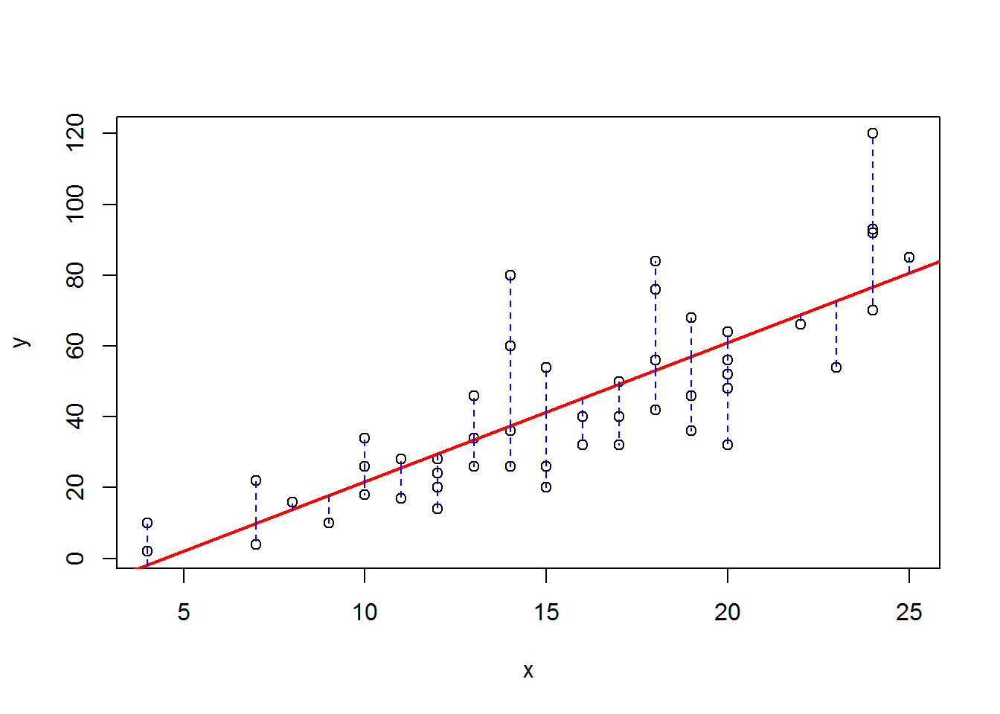

6 Bivariate Regression
6.1 Example 1
6.1.1 Problem
A record company boss was interested in predicting record sales from advertising.
Data:
- 200 different album releases
Outcome variable:
- Sales (CDs and downloads) in the week after release
Predictor variable:
- The amount (in units of $1000) spent promoting the record before release.
6.1.2 Solutioin
url <- "http://spatial.binghamton.edu/geog533/data/AlbumSales1.csv"
df <- read.csv(url,header = TRUE)
library(knitr)
kable(head(df,n = 10))| adverts | sales |
|---|---|
| 10.256 | 330 |
| 985.685 | 120 |
| 1445.563 | 360 |
| 1188.193 | 270 |
| 574.513 | 220 |
| 568.954 | 170 |
| 471.814 | 70 |
| 537.352 | 210 |
| 514.068 | 200 |
| 174.093 | 300 |
plot(df)
m <- lm(df$sales ~ df$adverts)
m##
## Call:
## lm(formula = df$sales ~ df$adverts)
##
## Coefficients:
## (Intercept) df$adverts
## 134.13994 0.09612m <- lm(sales ~ adverts, data = df)
summary(m)##
## Call:
## lm(formula = sales ~ adverts, data = df)
##
## Residuals:
## Min 1Q Median 3Q Max
## -152.949 -43.796 -0.393 37.040 211.866
##
## Coefficients:
## Estimate Std. Error t value Pr(>|t|)
## (Intercept) 1.341e+02 7.537e+00 17.799 <2e-16 ***
## adverts 9.612e-02 9.632e-03 9.979 <2e-16 ***
## ---
## Signif. codes: 0 '***' 0.001 '**' 0.01 '*' 0.05 '.' 0.1 ' ' 1
##
## Residual standard error: 65.99 on 198 degrees of freedom
## Multiple R-squared: 0.3346, Adjusted R-squared: 0.3313
## F-statistic: 99.59 on 1 and 198 DF, p-value: < 2.2e-16abline(m,col="red",lwd=2)attributes(m)## $names
## [1] "coefficients" "residuals" "effects" "rank"
## [5] "fitted.values" "assign" "qr" "df.residual"
## [9] "xlevels" "call" "terms" "model"
##
## $class
## [1] "lm"The equation is: \(sales = a + b\times adverts = 134.1399 + 0.0961 \times adverts\)
6.2 Example 2
Speed and Stopping Distances of Cars
df <- cars
library(knitr)
kable(head(df,n = 10))| speed | dist |
|---|---|
| 4 | 2 |
| 4 | 10 |
| 7 | 4 |
| 7 | 22 |
| 8 | 16 |
| 9 | 10 |
| 10 | 18 |
| 10 | 26 |
| 10 | 34 |
| 11 | 17 |
plot(df)
x <- cars$speed
y <- cars$dist
plot(y ~ x)
m <- lm(y~x)
m##
## Call:
## lm(formula = y ~ x)
##
## Coefficients:
## (Intercept) x
## -17.579 3.932summary(m)##
## Call:
## lm(formula = y ~ x)
##
## Residuals:
## Min 1Q Median 3Q Max
## -29.069 -9.525 -2.272 9.215 43.201
##
## Coefficients:
## Estimate Std. Error t value Pr(>|t|)
## (Intercept) -17.5791 6.7584 -2.601 0.0123 *
## x 3.9324 0.4155 9.464 1.49e-12 ***
## ---
## Signif. codes: 0 '***' 0.001 '**' 0.01 '*' 0.05 '.' 0.1 ' ' 1
##
## Residual standard error: 15.38 on 48 degrees of freedom
## Multiple R-squared: 0.6511, Adjusted R-squared: 0.6438
## F-statistic: 89.57 on 1 and 48 DF, p-value: 1.49e-12abline(m,col="red",lwd=2)
segments(x,fitted(m),x,y,col="blue",lty = "dashed")
result <- cor.test(x,y,method = "pearson")
result##
## Pearson's product-moment correlation
##
## data: x and y
## t = 9.464, df = 48, p-value = 1.49e-12
## alternative hypothesis: true correlation is not equal to 0
## 95 percent confidence interval:
## 0.6816422 0.8862036
## sample estimates:
## cor
## 0.8068949r <- result$estimate
r2 <- r^2
round(r2,4)## cor
## 0.6511p=1
n=nrow(df)
adjusted.r2 <- r2-(1-r2)*p/(n-p-1)
round(adjusted.r2,4)## cor
## 0.6438Make predictions based on new inputs:
df <- cars
m <- lm(dist~speed,data = df)
n <- nrow(df)
df$x <- sample(10:100,size = n)
df$y <- predict(m,newdata = data.frame(speed=df$x))
library(knitr)
kable(head(df,n = 10))| speed | dist | x | y |
|---|---|---|---|
| 4 | 2 | 21 | 65.00149 |
| 4 | 10 | 48 | 171.17653 |
| 7 | 4 | 66 | 241.95988 |
| 7 | 22 | 11 | 25.67740 |
| 8 | 16 | 46 | 163.31171 |
| 9 | 10 | 74 | 273.41915 |
| 10 | 18 | 26 | 84.66353 |
| 10 | 26 | 94 | 352.06733 |
| 10 | 34 | 69 | 253.75711 |
| 11 | 17 | 75 | 277.35156 |
plot(df$x,df$y)
abline(m,col="red")6.3 Example 3
x <- c(65,35,30,44,80,77,32,39,44,77)
y <- c(120,68,35,60,100,91,44,71,89,113)
library(knitr)
kable(cbind(y,x))| y | x |
|---|---|
| 120 | 65 |
| 68 | 35 |
| 35 | 30 |
| 60 | 44 |
| 100 | 80 |
| 91 | 77 |
| 44 | 32 |
| 71 | 39 |
| 89 | 44 |
| 113 | 77 |
n <- length(x)
mx <- mean(x)
my <- mean(y)
sx <- sd(x)
sy <- sd(y)
numerator <- sum((x-mx)*(y-my))
numerator## [1] 4301.7denominator <- sum((x-mx)^2)
denominator## [1] 3672.1slope <- numerator / denominator
slope## [1] 1.171455intercept <- my - slope * mx
intercept## [1] 17.8329m <- lm(y~x)
summary(m)##
## Call:
## lm(formula = y ~ x)
##
## Residuals:
## Min 1Q Median 3Q Max
## -17.977 -11.492 -2.206 8.745 26.023
##
## Coefficients:
## Estimate Std. Error t value Pr(>|t|)
## (Intercept) 17.833 15.207 1.173 0.27466
## x 1.171 0.273 4.291 0.00265 **
## ---
## Signif. codes: 0 '***' 0.001 '**' 0.01 '*' 0.05 '.' 0.1 ' ' 1
##
## Residual standard error: 16.54 on 8 degrees of freedom
## Multiple R-squared: 0.6971, Adjusted R-squared: 0.6592
## F-statistic: 18.41 on 1 and 8 DF, p-value: 0.002648MSS <- sum((fitted(m) - my)^2)
MSS## [1] 5039.248RSS <- sum((y - fitted(m))^2)
RSS## [1] 2189.652TSS <- RSS + MSS
TSS## [1] 7228.9df1 <- 1
df2 <- n-2
df3 <- df1+df2
msq1 <- MSS / df1
msq2 <- RSS / df2
F.value <- msq1 / msq2
F.value## [1] 18.41114F.critical <- qf(0.95,df1 = 1,df2 = n-2)
F.critical## [1] 5.317655rsq <- MSS / TSS
rsq## [1] 0.6970975if(F.value>F.critical){
print("We reject the null hypothesis")
} else {
print("We cannot reject the null hypothesis")
}## [1] "We reject the null hypothesis"| Sum of squares | df | Mean square | F | |
|---|---|---|---|---|
| Regression | 5039.25 | 1 | 5039.25 | 18.41 |
| Residual | 2189.65 | 8 | 273.71 | |
| Total | 7228.9 | 9 |